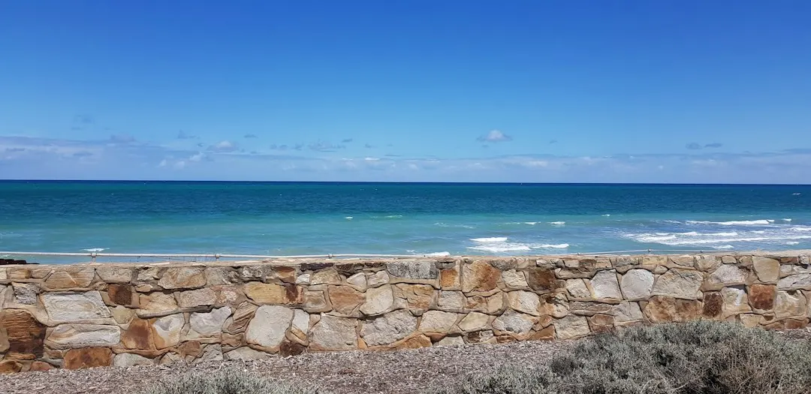

A fair retaining-wall quote should identify the wall system, approximate length and retained height, excavation, spoil removal, access, drainage, backfill, engineering, approvals and GST. The visible wall is only part of the work. Before comparing totals, provide photos, dimensions, site access, nearby structures and water information. Approval requirements vary by address, so check the relevant council or government source rather than relying on one national height rule.
When comparing retaining wall quotes australia homeowners need a brief that explains the site, proposed wall, drainage and approval questions before providers can price the same scope.
Retaining Wall Quotes Australia Explained
The planning approach published by Retaining Wall Pros begins with the information that changes the job, not simply the facing material. Record the approximate length, highest and lowest retained height, slope, nearby structures and how workers, equipment and spoil can reach the wall line.
Photos should show the wall line, slope, top, bottom and surrounding structures. Add gate width, stairs, side access and any likely route for moving materials or excavated spoil. A quote based on a clear site brief is easier to compare than one based on a short description such as "replace a garden wall".
- Describe whether the project is a new wall, repair or replacement, drainage or water issue, or an uncertain condition.
- Record ponding, outlets, erosion, staining and known stormwater connections.
- State anything that may place extra load above the wall, including a driveway, building or another terrace.
Compare the whole installed scope
Concrete sleeper systems use steel posts and reinforced concrete sleepers, while timber sleeper systems may use treated pine or hardwood for suitable garden and terraced applications. Besser or core-filled block systems can involve footing, drainage and structural design. Rock, boulder, sandstone and gabion systems bring different footprint, access and landscape considerations.
Material alone does not establish value. Excavation, soil conditions, spoil removal, drainage, engineering, restoration and approval work can alter the total more than the visible facing. Ask every provider to identify what is included and excluded, then compare like with like.
Before accepting a total, check whether the written scope addresses:
- excavation, footing or posts, backfill and restoration;
- drainage, filtration and lawful discharge;
- engineering, permits or other approval steps;
- spoil disposal, access constraints and GST.
Use the address for approval checks
Approval is a property-specific question. A low wall can still carry additional load when a driveway, building or another terrace sits above it. Pools, boundaries and the destination of collected water may also change the authority pathway.
The published location resources cover all six Australian states and both mainland territories, with a relevant council or government source for the address. Open that source before relying on a remembered height threshold. If the site is near a boundary, structure, pool or drainage connection, ask the provider which documents or approvals should be confirmed before construction.
Keep the evidence with the quote: note the authority consulted, the property location, the proposed wall dimensions and any conditions that affect design or discharge. This gives each provider the same approval question and reduces the chance that an apparently comparable price is based on different assumptions.
Choose the next action for the wall condition
New construction and replacement require different information from a repair enquiry. For a new wall, provide the intended line, height range, material preference and site context. For an existing wall, describe movement, damage, water symptoms, leaning, displaced material or other visible changes without assuming the remedy.
A drainage or water issue should be described separately from the wall finish. Include where water collects, where it appears to come from, existing outlets and where discharge currently goes. The useful question is whether the proposed work deals with the source and collection path, rather than only covering the visible symptom.
If the material is uncertain, request a comparison of suitable systems against the same dimensions and access conditions. A provider can then explain whether the footprint, drainage, structural design, maintenance or landscape setting changes the practical choice.
Who this guide applies to
This guide is for Australian property owners and project planners comparing a new retaining wall, replacement, repair or drainage-related enquiry. It is also useful when several quotes appear inconsistent and you need to identify whether the difference comes from scope rather than the wall face.
It does not determine structural design, approval eligibility or lawful discharge for a particular property. Those questions should be checked with the relevant council or government source and addressed with the provider before work is agreed. For a Brisbane-focused preparation path, see the Brisbane retaining-wall quote guide.
- Measure the wall line. Record approximate length plus the highest and lowest retained height.
- Photograph the setting. Capture the top, bottom, slope, nearby structures, access points and visible water issues.
- Check the address. Open the relevant council or government source and note approval questions for the property.
- Standardise the quote request. Send each provider the same dimensions, photos, access information, drainage details and requested inclusions.
- Compare exclusions. Check excavation, spoil, drainage, engineering, approvals, restoration and GST before comparing totals.
| System or approach | Useful comparison question | Site detail to provide |
|---|---|---|
| Concrete sleeper | Are posts, sleepers, footing, drainage and engineering included? | Retained height, length, access and loads above |
| Timber sleeper | Is the proposed timber suitable for the garden or terraced setting, and what maintenance is expected? | Exposure, drainage, access and existing wall condition |
| Block, rock or gabion | How do footprint, structural design, drainage and landscape context affect the scope? | Slope, available space, material preference and discharge path |
Common questions
What affects the cost of a retaining wall? Height, length and wall system matter, but excavation, spoil removal, access, soil conditions, surcharge loads, drainage, engineering and approvals can change the total more than the facing material. Compare quotes against the same scope and check inclusions such as backfill, disposal and GST.
Should retaining-wall quotes be compared per metre or per square metre? Neither unit is sufficient by itself. A unit rate becomes useful only when the quoted dimensions, wall system, access, drainage, excavation, engineering, restoration and exclusions are also clear.
Can one national height rule be used for every property? No single remembered rule should replace an address-specific check. The relevant authority pathway can be affected by loads above the wall, pools, boundaries and collected-water discharge.
What information improves an enquiry? Provide the location or postcode, project need, approximate length, retained height, material preference if known, timing, access or drainage constraints and photographs. Unknown optional details can be left blank while the core site information is supplied.
What should be included when comparing a repair or replacement? Describe the existing wall condition, visible movement or damage, water symptoms, access and nearby structures. Ask whether the proposed scope addresses the underlying drainage or site condition as well as the visible wall.
This guide covers how to prepare and compare retaining-wall quotes across Australia, including scope, materials, drainage, access and address-specific approval questions.